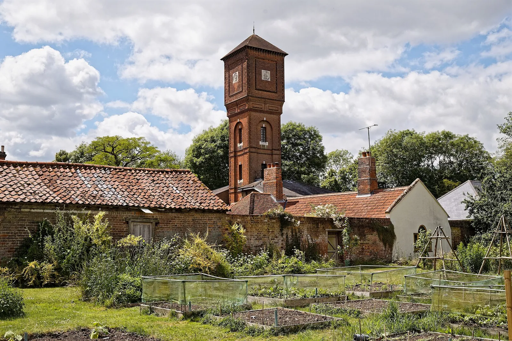

How often, how much, and how to water. Why no one can hand you a watering schedule, the finger test that replaces it, the inch a week your rain counts toward, and the habits (deep, at the base, early, under mulch) that prevent most trouble.

Photo: Acabashi · CC BY-SA 4.0, via Wikimedia Commons.
What you need
A way to deliver water at the soil, such as a soaker hose, drip line, or a wand you hold low
Your finger. The moisture test costs nothing and beats any schedule
The willingness to check before every watering, with no timer
Mulch, such as straw, shredded leaves or bark, to cut how often you need to water
Watering is where the most gardens go wrong, and in both directions. A plant is as easily drowned as dried. The trouble is that most watering advice comes as a schedule (“every three days”), and no tool can give you a schedule you can trust, because it depends on the weather at your address this week. So this guide gives you the method a schedule was always standing in for, the habits that prevent most of the damage, and the one number worth keeping: how much water a growing garden uses in a week.
How often should I water?
The answer is a method, because a number can’t be right for everyone:
How often to water is a weather question, and your soil answers it better than any schedule. This planner will not invent one.
If you skip this, it still grows, just less well. The planner suggests it.
How it works: How fast ground dries is set by rainfall, temperature, wind and humidity in your own bed, day by day. Monthly normals describe a usual month and a forecast a coming week, and neither sees your soil, so an interval computed from them is a guess wearing a schedule's clothes.
Evidence: settled without a trial (epistemics).
Remedy
Check the soil to decide when to water. Push a finger in to the second knuckle and water if it is dry at that depth. That's a method with no number, and it stands in for a frequency nobody can compute for your week. When you do water, put it on the soil and keep it off the leaves, and water long enough to reach the roots. Darkening the surface is not enough.
How fast your soil dries depends on heat, wind, humidity, and rain, none of which a planner can see from your address. So use your hand in place of a calendar: push a finger into the soil to the second knuckle, and water only if it is dry down there. A newly seeded bed and a bed of established plants dry at different rates; the finger reads both. That single test does more for a garden than any watering schedule ever printed on a seed packet.
How much water is enough when I do water?
The most common watering mistake is a daily splash that wets the surface and nothing below it:
A light sprinkle does not reach the roots. Water long enough to wet the soil to root depth, or the plant gets nothing.
If you skip this, it still grows, just less well. The planner suggests it.
How it works: Water moves down only as far as the volume applied can wet it. A brief watering darkens the surface and stops there, while the roots that take up water sit well below it, so the water never arrives where it is needed.
Evidence: checked against 2 sources in the research-based literature.
Most of the small feeder roots responsible for water uptake are located in the top 12 to 18 inches of soil
Remedy
Water until the soil is moist about a hand's depth down. A wet-looking surface is not enough. Push a finger in afterwards to find where the water actually got to. From above, you can't tell a plant watered from a plant dampened.
Roots live well below the surface, and water only reaches as deep as the amount you put on can carry it. A brief sprinkle darkens the top and stops. So water long enough to wet the soil a hand’s depth down, then check with a finger to see where it reached. From above, you can’t tell a plant that’s been watered from one that’s only been dampened. A good soak every few days beats a light sprinkle every day.
Should I water the leaves or the soil?
Where the water lands matters as much as how much:
“Water the soil, not the leaves. A film of water on a leaf is what most fungal spores need in order to germinate.”, the rule’s claim, drawn. Watering carries no corpus number, so the figure shows only the mechanism the rule states.Source: the corpus watering rule, with its claim quoted above and its mechanism drawn.
Water the soil, not the leaves. A film of water on a leaf is what most fungal spores need in order to germinate.
If you skip this, it still grows, just less well. The planner suggests it.
How it works: A spore landing on a leaf needs liquid water on that surface to germinate and enter it. Water delivered to the soil never puts a film there; water thrown over the plant does, and the longer it lasts the more of the spores already present can use it.
Evidence: checked against 3 sources in the research-based literature.
If possible, avoid watering at the foliage of the plant which can lead to disease.
Remedy
Put the water at the base with a soaker hose, a drip line, or a wand held low, so the foliage stays dry. If overhead is all you have, water when the leaves will dry quickly, so they are not wet into the night.
A film of water sitting on a leaf is precisely what most fungal spores need to germinate and get into the plant. Water delivered to the base never wets the foliage; water thrown over the top does, and the longer the leaves stay wet the more spores can use it. So put the water at the soil with a soaker hose, a drip line, or a wand held low. If overhead is the only option you have, do it in the morning so the leaves dry fast and aren’t wet into the night.
How much water does a vegetable garden need in a week?
The one number worth keeping is a weekly total, not a timetable:
Vegetables need about an inch of water a week, and what the rain doesn't bring, you do.
If you skip this, it still grows, just less well. The planner suggests it.
How it works: Growing plants draw water out of the soil, and sun and air dry it from the top. What the rain does not put back, the soil loses until it is watered.
Evidence: checked against 4 sources in the research-based literature.
The average vegetable garden needs about 1 inch of rain per week. This looks like: 62 gallons for a 10x10-foot area. About 20 gallons for a 4x8-foot raised bed.
Most vegetable gardens require approximately one inch of water per week, excluding rainfall.
Remedy
Read the month's normal rain beside the inch a week to see how much of it is yours, and let the soil pick the day: water when it is dry at the second knuckle, and water long enough to reach the roots. An inch over a 4 by 8 foot bed is about 20 gallons, and over a square meter about 25 liters.
A growing vegetable garden uses about 25 mman inch of water a week, rain and watering together. Rain counts, so the useful question is how much of that inch your rain brings. In a month whose rain falls short, your watering makes up the difference; where the rain brings less than a quarter of it, nearly every drop is yours. Milpa’s Calendar sets each month’s normal rain beside the inch, and so does the page for your place under Frost dates and growing weather. The soil still picks the day: water when it is dry at the second knuckle, and long enough to reach the roots. That inch comes to about 25 liters on each square meter20 gallons on a 4 by 8 foot bed.
How often should I water when it is very hot?
Heat changes how often, not how much:
In the hottest months, expect to water every day or every other day.
If you skip this, it still grows, just less well. The planner suggests it.
How it works: Heat speeds both the water plants draw from the soil and the water the soil loses to the air, so after each watering the soil is dry again sooner.
Evidence: checked against 2 sources in the research-based literature.
During extremely hot weather (daytime temperatures above 90°F and nighttime temperatures above 70°F), try to water daily or every other day. In a 10x10-foot garden, this would mean giving your plants 8 to 9 gallons of water each day.
As a rule, it will be necessary to irrigate your vegetable garden 2 to 4 times a week in the warmest/driest summer months and once or twice per week or less in other seasons.
Remedy
In those months check the soil every day, and expect to water daily or every other day, early in the morning, at the soil and down to the roots. The soil still decides: if it is moist at the second knuckle, wait.
Where days run above 32°C90°F and nights stay above 21°C70°F, plants draw water faster and the soil dries out again sooner after each watering. Expect to water daily or every other day in those weeks, and keep checking the soil every day: if it is still moist at the second knuckle, wait. The Calendar and your place’s page name the months this usually happens where you garden.
In hot weather, water early in the morning, before the heat of the day.
If you skip this, it still grows, just less well. The planner suggests it.
How it works: Less water evaporates from the soil in the cool of the morning than in the heat of the day, so more of what you give soaks in and reaches the roots.
Evidence: checked against 3 sources in the research-based literature.
Water your plants in the morning as early as possible. This allows the soil and your plants to absorb more water because, in the heat of the day, there is more evaporation occurring at the soil surface.
Water early in the morning, before the heat of the day. Less of the water is lost to the air in the cool of the morning, so more of what you give reaches the roots, and the leaves dry fast.
A layer of straw, shredded leaves or bark 5 to 8 cm2 to 3 inches deep over the soil between the plants shades it, so less water leaves from the surface and the moisture below stays more even. Colorado State puts the saving at about half. Grass clippings go on thinner, no more than 2.5 cman inch at a time.
Do containers need different watering?
Everything above assumes ground with depth below it. A pot does not have that, and it changes the cadence completely:
A container dries out faster than the same plant in the ground, and it is the one place where a day's inattention can cost you the plant.
If you skip this, it still grows, just less well. The planner suggests it.
How it works: A container holds a small fixed volume of soil, its whole root zone sits above ground, cut off from the soil below, and a porous pot loses water from its sides as well as its surface. The reservoir is smaller and it empties faster.
Evidence: checked against 2 sources in the research-based literature.
Depending upon the size and material of the container, you may need to water more than once per day during hot, dry weather.
Plus one working note on how the sources were read.
Remedy
Check a container at least once a day, and twice when it is hot, dry or windy. In high summer it may need water more than once a day. A plastic pot holds moisture longer than an unglazed clay one, and a bigger pot longer than a small one.
A container’s whole root zone sits in a small volume of soil above the ground, and it dries out fast. In high summer a small pot may need water more than once a day. It is the one place a single missed day can cost you the plant, so containers get checked daily, twice when it is hot. The container gardening guide covers the rest of pot care.
How do I water a bed on a covered patio or indoors?
A bed the rain cannot reach is a different garden:
A bed under a roof, a patio cover or indoors gets no rain, so all of its water comes from you, whatever the weather.
If you skip this, it still grows, just less well. The planner suggests it.
How it works: The roof or ceiling stops the rain before it reaches the soil, so a wet week outside adds nothing to the water in the bed.
Evidence: settled without a trial (definition).
Remedy
Water it by its own soil and never by the weather outside: a rainy week is no reason to skip it. Push a finger in to the second knuckle and water if it is dry there, and when you water, soak it down to the roots.
A bed on a covered patio, under a porch roof or in a sunroom gets none of the rain, so all of its water comes from you, whatever the weather. Water it by its own soil, never by the weather outside: a rainy week is no reason to skip it. In Milpa, a bed says whether rain reaches it when you add or edit it, and its report and the Calendar then say what that means.
Put together, good watering comes down to a few habits. Check the soil before you water, water deep when you do, keep it off the leaves, water early in hot weather, and mulch. No one, including this app, can tell you the number of days between waterings, because that number lives in the weather. What it can tell you is how much of the inch a week your rain usually brings, and which months are hot enough to check every day.
Further reading
Good places to read more about the technique on this page. The grade on each card comes from that card’s own sources.